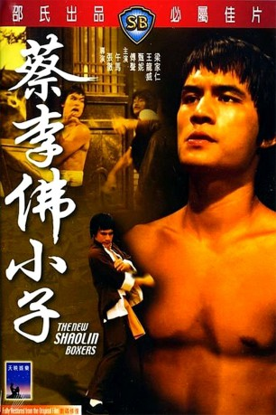

#7745 Der Todesblitz der Shaolin
 
 IMDB-Wertung: 6.6 / 10
IMDB-Wertung: 6.6 / 10  Metascore: 0
Metascore: 0 
Eine mörderische Bande von Verbrechern stiftet in einem kleinen Dorf mehr als nur Unruhe.\r Als die Bande den Lehrmeister FU SHENGS tötet als dieser gerade bei einem Mönch neue Kung Fu Techniken lernt, schwört dieser blutige Rache bis zum letzten Mann....
Jahr: 1976
Dauer: 96 Minuten
FSK: 16
Land: Taiwan Studio: AS FilmverleihTonspuren:
Untertitel: Deutsch,
Auflösung: 1080p (1920x808) Größe: 5068 MB
Genre: Action, Drama
Regisseur: Cheh Chang, Wu Ma
Drehbuch: Cheh Chang
Soundtrack: Yung-Yu Chen
Darsteller:
Datei: X:\HD-Eastern-Classic(N-Z)\Todesblitz der Shaolin, Der (1976, FSK16, 1920x808).mkv seit 15.12.2017
Festplatte: HD Eastern+Western
 Es gibt insgesamt 61 Filme in der Gruppe 'HD-Eastern-Classic(N-Z)'
Es gibt insgesamt 61 Filme in der Gruppe 'HD-Eastern-Classic(N-Z)'